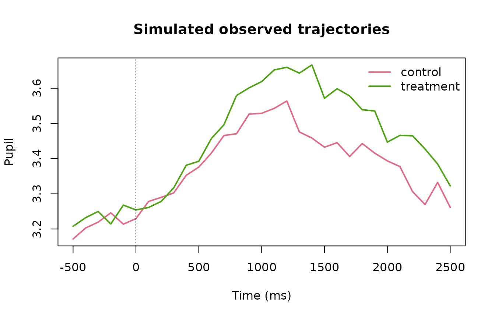

Robust and Distributional Pupil Models
Source:vignettes/robust-distributional-pupil-models.Rmd
robust-distributional-pupil-models.RmdWhy separate location and residual scale?
A Gaussian pupil model with constant residual standard deviation assumes the unexplained variability is similar across the full time course and conditions. gp3bayes 0.5 can instead declare the residual scale as constant, condition-dependent, time-dependent, or condition-by-time dependent. The Student-t option provides a robust observation distribution without automatically labelling individual observations as invalid outliers.
sim <- simulate_advanced_pupil_timecourse(
n_participants = 10,
trials_per_participant = 4,
time_points = 31,
heteroskedastic_strength = 0.8,
outlier_fraction = 0.03,
seed = 3001
)
plot_advanced_pupil_simulation(sim)
gaussian_constant <- specify_pupil_distribution("gaussian", "constant")
gaussian_time <- specify_pupil_distribution("gaussian", "condition_time")
student_time <- specify_pupil_distribution("student", "condition_time")
pupil_distribution_table(gaussian_constant)
#> family residual_scale robust distributional
#> 1 gaussian constant FALSE FALSE
pupil_distribution_table(gaussian_time)
#> family residual_scale robust distributional
#> 1 gaussian condition_time FALSE TRUE
pupil_distribution_table(student_time)
#> family residual_scale robust distributional
#> 1 student condition_time TRUE TRUECandidate specifications are explicit
spec_constant <- specify_advanced_pupil_timecourse_model(
sim$data,
family = "gaussian",
residual_scale = "constant",
autocorrelation = "none"
)
spec_distributional <- specify_advanced_pupil_timecourse_model(
sim$data,
family = "gaussian",
residual_scale = "condition_time",
autocorrelation = "none"
)
spec_robust <- specify_advanced_pupil_timecourse_model(
sim$data,
family = "student",
residual_scale = "condition_time",
autocorrelation = "none"
)Student-t robustness and residual ARMA are deliberately not combined in the governed 0.5 interface. They should be treated as distinct modelling hypotheses and compared against the declared predictive target.
Posterior residual-scale trajectory
fit_distributional <- fit_advanced_pupil_model_backend(
spec_distributional,
backend = "cmdstanr",
cores = 2
)
sigma <- estimate_pupil_residual_scale(fit_distributional)
pupil_residual_scale_table(sigma)
plot_pupil_residual_scale(sigma)